Ludus
45 games, one click from your menu bar
- 2048
- Chess
- Snake
- Minefield
- Play online
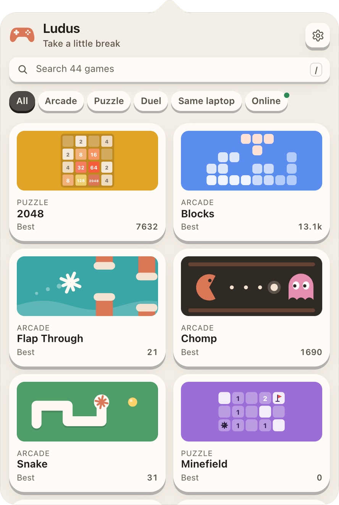
Free, quiet and made to stay out of your way. Pick one to see what it does and download it.
45 games, one click from your menu bar

Everything you copy, searchable and one shortcut away
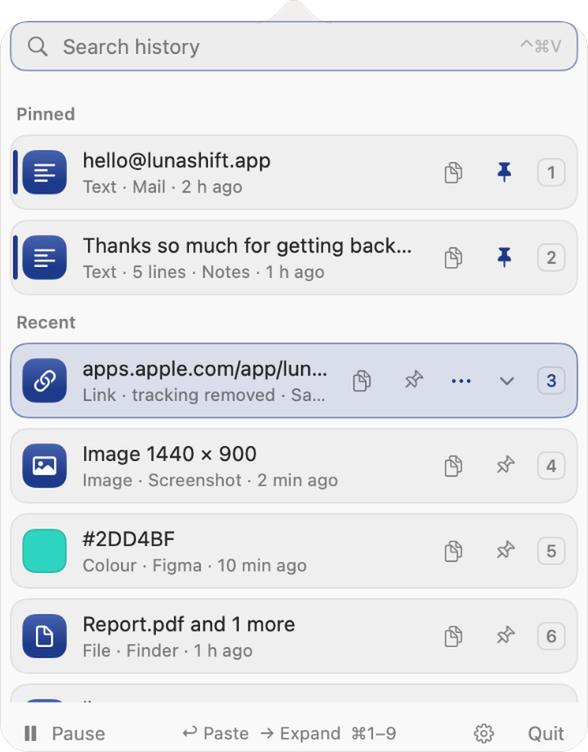
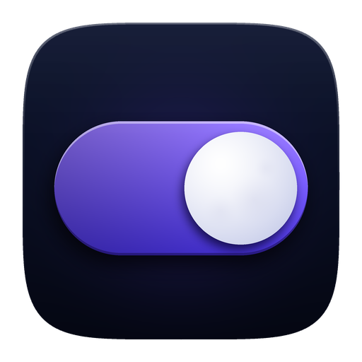
One click flips your whole Mac between light and dark
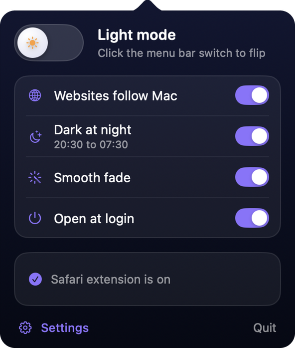
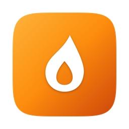
Close the lid. Your Mac stays awake.
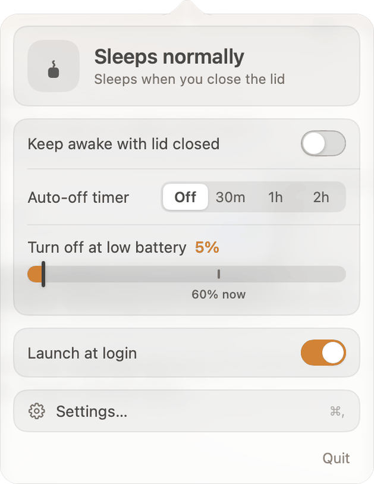
The forecast under a sky that moves
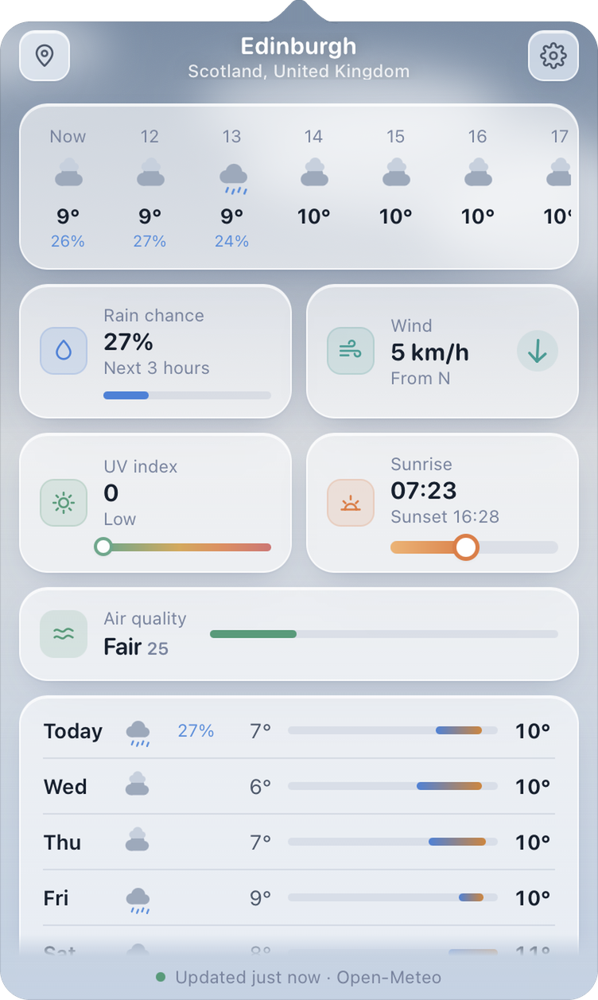
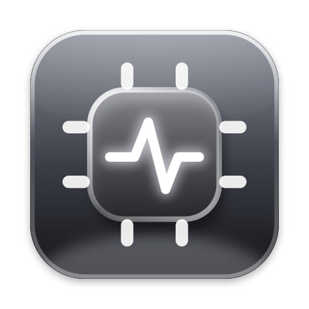
Your Mac's health, in plain words
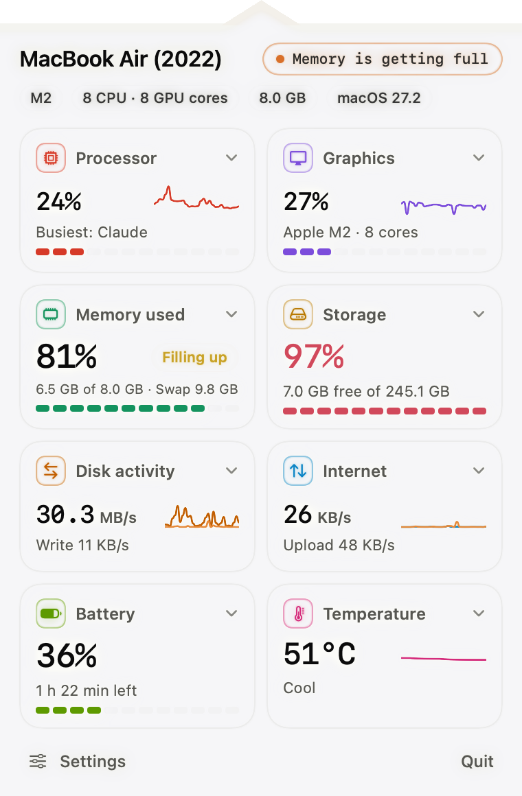
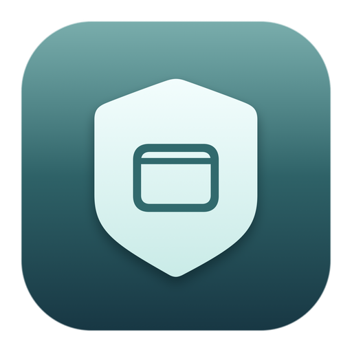
Never lose an icon behind the notch
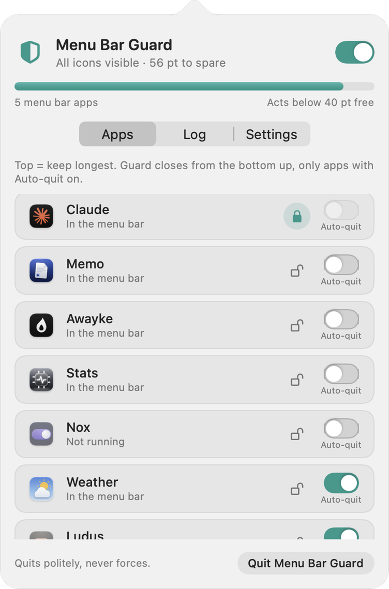
All apps
Weather in your menu bar, with a sky that moves. Mac. Version 1.1.6.
See Weather →All downloads, Mac and Windows
Every download link always gives the newest build. Mac apps are signed and checked by Apple, so they open like any normal app: open the download, drag to Applications, double-click. On Windows, SmartScreen may warn you the first time: click More info, then Run anyway.